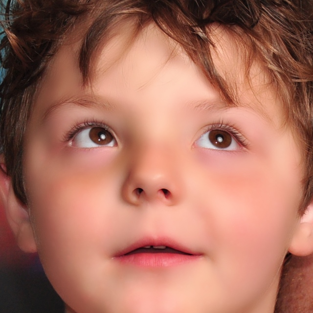
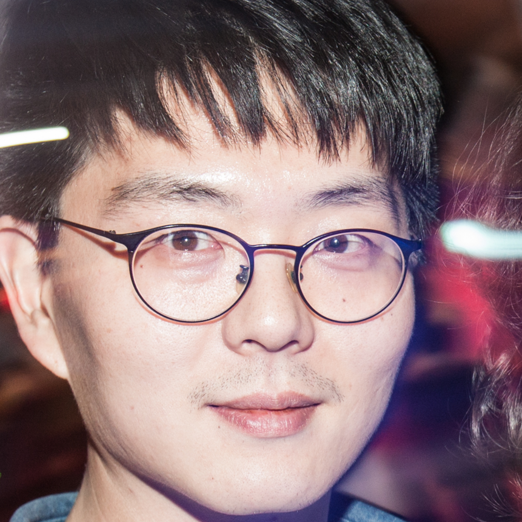
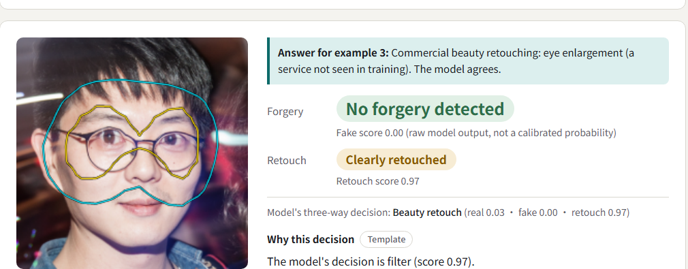

Beautified Is Not Forged
A face checker that answers real, beautified or forged, and marks the evidence so you can check it.
16/17
published deepfake detectors call a smoothed genuine face forged. Ours does not.
1
One beauty edit, two detector errors
scores at each detector's own threshold (5% false alarms on untouched faces)genuine photo
beauty app
skin smoothing
skin smoothing

still the same personPrior detectors · real / fake only
FAKE false alarm
Effort0.72
Forensics Ad.0.95
GenD0.97
DFD-HR0.94
Ours · real / beautified / forged
BEAUTIFIED
real
beautified
forged
face swap
beauty app
preset
preset
still a deepfake
Prior detectors · real / fake only
GENUINE missed
Effort0.44
Forensics Ad.0.67
GenD0.70
DFD-HR0.74
Ours · the forgery score never reads the beauty score
FORGED
real
beautified
forged
13 / 17detectors call 36–69% of smoothed genuine faces forged: a real / fake detector has no third answer.
2
What a beauty filter does
one FFHQ face, four operations of a retouching service our model never saw in training (Alibaba, strength 90)Commercial apps apply several of these at once and never say where. We split their renders into single operations with an exact footprint, and train on the pieces. Below each face: how often our model calls that operation beautified.

original78.4% called realeye enlarging69.7% beautified
face slimming61.3% beautified
skin smoothing98.8% beautified
whitening72.3% beautified
3
Why it happens, and what we built
same model, same data, same recipe: only which class saw smoothing in training changesThe error is set in training
smoothed genuine faces called forged (%) at 5% false alarms · report Table: exposure
One backbone, three supervision sources, four heads
4
Against 17 published detectors
official weights, same frames, same crops · FF++ test recall real 82.7 · forged 90.9 · beautified 86.7%Both errors at once · lower left is better
● CNN / generated-image detector ■ CLIP-based detector, 2025–26 ★ ours, three-way, two seeds
Same training videos, after beautification
Celeb-DF-B video AUC; every model trained on the same FF++ videos
No published detector is below ours in both directions. Paired intervals vs Effort, Forensics Adapter and SBI exclude zero; on untreated swaps we are on par with the 2025 CLIP detectors.
5
Evidence you can check
restore the marked region, the decision goes away nose replaced
nose replacedforged 1.00
 evidence head
evidence headmarks the nose
 nose restored
nose restoredreal 0.95
94%
of forgery decisions removed by restoring the marked region (ceiling 94.1%); Grad-CAM 51%
51–53%
VLM descriptions matched to their own photo blind: chance level, so code writes every sentence (361/361 pass)
6
In the browser
nothing uploaded
try it on your phone
0.59 s per photo
0.59 s per photo